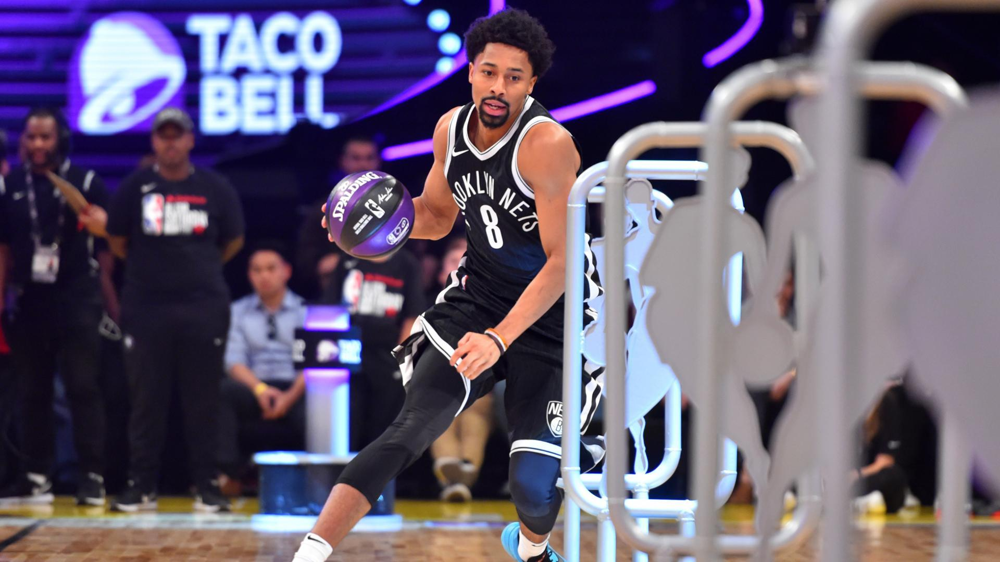

Below are the events that occur in the NBA.
The Preseason is where the teams of the NBA start to begin training camps in late September. These allow their coaches to evaluate their players in terms of skills, strength, agility, and weaknesses. These also prepare the players for the regular season (later discussed), and determine the 12-man active roster in which they would begin with. After training camp, a series of preseason exhibition games are held, sometimes even in locations outside of the country (U.S.A.). This year, a few preseason games were held in Japan.
During the regular season, each team plays a total of 81 games, 41 each on their home court and their opponent’s court (away). A team first faces opponents in their own division and compete against them for four times (16 games). Then, each team plays six of the teams from the other two divisions in its conference four times, which makes a total of 24 games. They then face the remaining four teams three times, which makes a total of 12 games. Finally, each would play all the teams in the other conference twice (30 games). Some of the teams would later make it to the playoffs (later discussed), depending on the amount of games the team won.
The playoffs consist of the top eight teams in each conference, depending on the number of times they won. In each conference, the first seed (seed is position) goes against the eighth seed, the second seed goes against the seventh seed, the third seed competes against the sixth seed, and the fourth seed competes against the fifth seed. This means the higher placed teams would play weaker teams near the bottom. The team with a better record would have the benefit of playing on their home court. The playoffs follow a tournament format, in which teams play an opponent in a best-out-of-seven series. This means the first team to win four games gets to advance to the next round. When two teams in each conference are left, they are known to be in the conference finals, and would have to play against each other to see who would make it to the final playoff round.
In the NBA finals, the victors of both conferences compete on a best-out-of-seven series. The team to win four games, not only wins the Larry O’ Brien Championship Trophy, but each player in that team also receives a championship ring. The ring is typically made of precious metals and gems, including diamonds and gold, and has a value ranging from 15 to 20 thousand USD. In addition, the NBA also awards the Bill Russell NBA Finals Most Valuable Player Award for the best performing player of the series.
The NBA All-Star Weekend is celebrated annually in the league. This consists of many challenges and attractions.
The NBA All-Star Game is one of the most popular ones. Fans vote for a captain (from each conference) on each team. These votes are counted throughout the United States, Canada, and from the Internet. The fans then vote to determine the rest of the starters in the game, in which the coaches vote to choose the remaining All-Stars. Then, the captains draft players on their team from the pool of All-Stars. The player with the best performance during the game would later be rewarded the Game MVP award.

Another favourite from the event is the NBA Slam Dunk Contest, where players compete to dunk the basketball in the most creative and entertaining way, in which the scores are given by the judges.

The Three Point Contest is another well liked attraction where players compete to score the highest number of three-point field goals in a given time. There are five sections, each with five balls in a rack. Whenever a player scores, it equals one point. However, the last ball in each rack is called a money ball, where it equals two points.
The Skills Challenge is where players compete to finish an obstacle course composed of shooting, dribbling, and passing in the fastest time.
The Rising Stars Challenge is where the top rookies and second-year players in the NBA play a basketball game with five players on each team.
Return back to the top